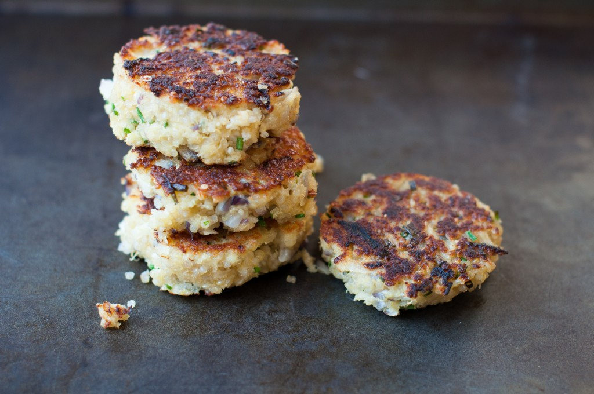

Quinoa Cakes
These crispy quinoa cakes are a twist on the traditional sausage patty found at breakfast. These savory cakes are packed with fresh vegetables and will be great served hot or room temperature. They are easily enjoyed alone or with a side of hash and a smoothie 
Tools for this recipe include a mixing spoon, fine mesh strainer, tongs, oven mitts, a mixing bowl, measuring spoons, a vegetable grater, a baking pan, parchment paper and oven. The following ingredients will be needed:
- 1 tablespoon nutritional yeast
- 2 tablespoons ground flax + 6 tablespoons water
- 1 1/2 cups cooked quinoa
- 1 cup destemmed, finely chopped kale
- 1/2 cup grated sweet potato
- 1/4 cup sunflower seeds
- 1/4 cup fresh basil, finely chopped
- 2 tablespoons finely diced onion
- 1/4 cup finely chopped oil-packed sun-dried tomatoes
- 1 tablespoon tahini paste
- 1 1/2 teaspoon dried oregano leaves
- 1 teaspoon salt
- 1 teaspoon dried red pepper flakes
- 3 tablespoons all-purpose flour
- Prep time: 25 minutes
- Cook time: 25 minutes
- Serves: 6, yiled 1 dozen cakes
Directions:
- Preheat oven to 400°F. Line a large baking sheet with parchment paper.
- Mix the ground flax and water in a small bowl and set aside for 5 minutes or so to thicken
-
Cook quinoa
- Rinse 1 cup uncooked quiona in a fine mesh strainer
- Place quinoa in a medium pot and cover with 1 ½ cups water.
- Bring to a boil then reduce heat to medium-low. Cover with lid and simmer for 15 minutes or until most of the water is abosrbed
- Remove from heat and fluff with a fork before placing lid back on to steam for 5 minutes off heat
- Extra quiona not used in this recipe can be stored in tupperware containers for one week
- In a mixing bowl toss all ingredients together, including the thickened flax mixture, nutritional yeast and the 1 1/2 cups of cooked quinoa. Combine well
-
Shape mixture into 1/4-cup patties with wet hands. Pack tightly so they hold
together better. Place on baking sheet.
- If the mixture is not forming into patties, add a dusting of flour to help bind the shape
- Bake for 15 minutes, then carefully flip with tongs cakes, and bake for another 8-10 minutes until golden and firm.
- Remove the baking sheet from the oven with oven mitts and turn oven off after use.
- Allow patties to cool for five minutes before enjoying